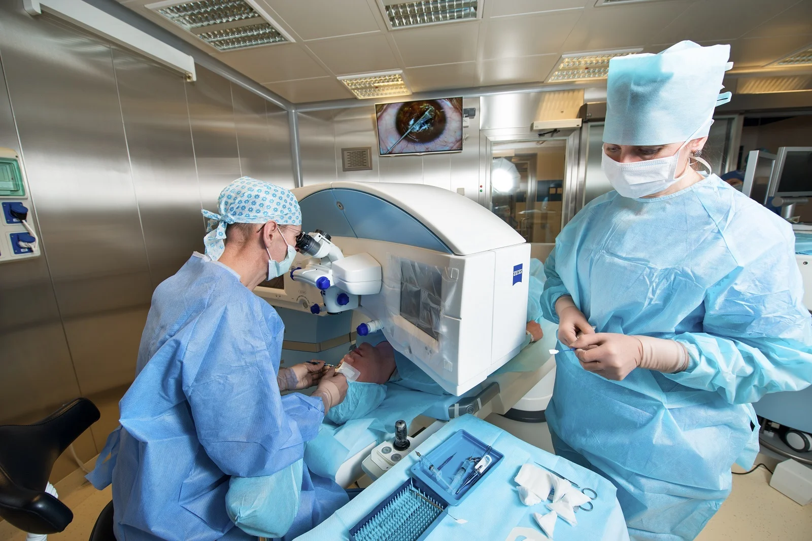
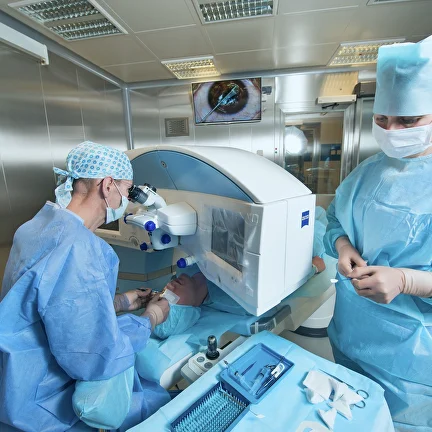
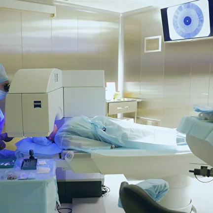
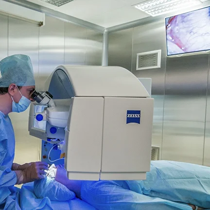

Самостоятельная работа
Задача: скопировать сайт
Есть сайт, который сделан на Тильде - https://eyeclinic-ekb.tilda.ws/laser
Подсказки:
-
Чтобы сделать блок с преимуществами, используй блок из секции "Преимущества" - FR201.
А также выбери "Эмодзи" и введи числа, например 1, чтобы отображать числа. - Ещё тебе понадобятся блоки: "Преимущества" - FR308; "Галерея" - GL03.
Картинки:
  